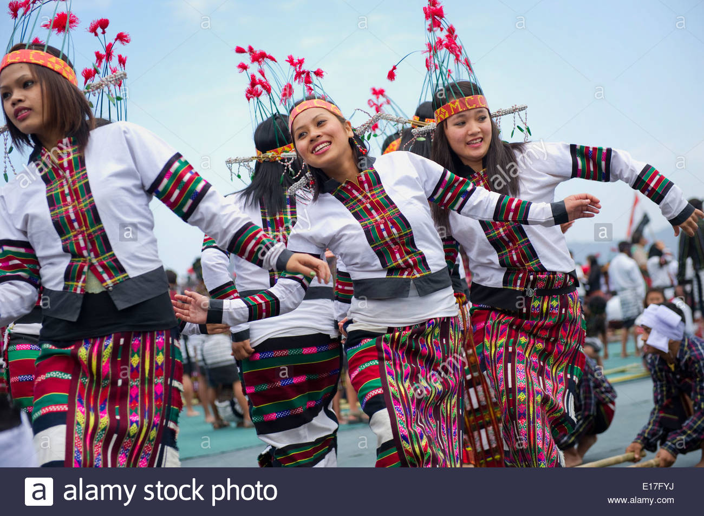

All About- 'Mizoram'
Mizoram is a state in northeastern India, with Aizawl as its capital city.
The name is derived from "Mizo", the name of the native inhabitants, and "Ram", which means land, and thus Mizoram means "Land of the Mizos".
The Mizo formed one of the important hill tribes of India sub-continent. Their traditional cherished beliefs, values with various social religious practices as well as culture have a given them a distinct Mizo identity.
The Mizo are vibrant, highly cultured and sociable people.
